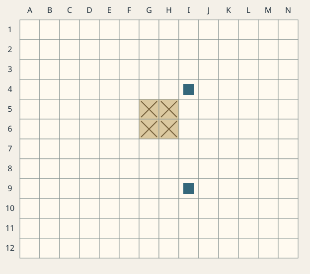

Одинаковые правила, разная история
Все карты совпадают с сеткой нативного пакета: 14 × 12, клетка — 5 футов. G5/H5/G6/H6 — трудная местность; I4/I9 — половинное укрытие. Остальные детали описания декоративны, пока ведущий не изменил поле штатно.
Расстановка и параметры
Герои по порядку: B3, B4, B5, B6, C3, C4, C5. Противники: L3, L4, L5, L6, M3. Используйте только нужное число фигур.
Для 3 / 4 / 5 / 6 / 7 игроков: 2 / 3 / 3 / 4 / 5 противников, здоровье каждого 12 / 14 / 16 / 18 / 20. Защита 12; скорость 20 футов; одна ближняя атака +3, 1d4+1 дробящего урона, досягаемость 5 футов.
Враги — простая поддерживаемая модель. Мирные решения и ограничения сцены описаны отдельно; ведущий подтверждает их результат. После первого раунда напомните пути переговоров или отступления. Встречи не запускаются автоматически.
Плащи держат вход
Только если игроки выбирают силой отодвинуть ожившие репетиционные плащи вместо спокойного осмотра. Ведущий предлагает мирный путь до начала боя.
Цель и выходы
Дойти до ручки остановки у дальней стены либо вывести мокрые книги за дверь. Победа не требует разбивать плащи; можно отступить на лестничную площадку, сохранив найденные улики.
Прочитать пришитую бирку «Пауза репетиции» и произнести слова с поднятой ладонью либо попросить Надю принести длинную ручку. Плащи замирают и пропускают людей; уничтожать их не нужно.
Поведение противников
Оживший сценический плащ с мягкими деревянными кистями; повторяет репетиционное движение и не преследует за дверью.
Плащи обычными перемещениями и ближними атаками преграждают короткий путь; не выбирают младших или раненых целью специально. При достижении ручки ведущий после действия героя останавливает репетицию.
Размер группы
3 игрока: 2 плаща, 12 хитов; 4: 3 по 14 хитов; 5: 3 по 16 хитов; 6: 4 по 18 хитов; 7: 5 по 20 хитов. У всех КД 12 и одна ближняя атака +3, урон 1d4+1. На дополнительных местах поручите наблюдать ручку и перенос книг; обязательных одновременных рычагов нет.

↔ На узком экране прокрутите карту вбок. Полный размер доступен по ссылке ниже.

Поле 14×12, колонки A–N, ряды 1–12. Вход A6, ручка M6. Мокрые листы только в G5, H5, G6, H6 создают трудную местность; закрытые ящики в I4 и I9 дают укрытие наполовину. Сухой обход по рядам 2 и 11 свободен; падений с высоты нет. Остальной реквизит декоративен.
Дублёры без режиссёра
Только по выбору группы при попытке пересечь работающую репетиционную полосу, пока каркасные дублёры продолжают старую сцену. Можно сразу остановить репетицию разговором.
Цель и выходы
Снять контрольную ленту с обычного пускателя или провести свидетеля к прозрачной ширме. Отступление за линию входа завершает преследование; доказательства доступны после мирной остановки.
Показать открытую карточку «Репетиция закончена» из держателя у входа либо попросить Алёну назвать команду остановки. Фигуры кланяются и складываются; даже в бою эту возможность можно использовать действием по решению ведущего.
Поведение противников
Высокая плетёная фигура с нарисованной улыбкой, заменявшая актёра на световой репетиции.
Дублёры ходят вдоль центрального прохода и выполняют обычные атаки против тех, кто мешает сцене. Они не могут менять таймер, прятать улики или выбирать исход расследования.
Размер группы
3 игрока: 2 дублёра с 12 хитов; 4: 3 с 14 хитов; 5: 3 с 16 хитов; 6: 4 с 18 хитов; 7: 5 с 20 хитов. КД 12, одна атака +3 в ближнем бою на 1d4+1. Разделите наблюдение за лентой и доступ к ширме, не повышайте DC за размер группы.
↔ На узком экране прокрутите карту вбок. Полный размер доступен по ссылке ниже.

Поле 14×12. Вход A6, пускатель M4, декоративная ширма K7. Мокрые канавки только в G5, H5, G6, H6 создают трудную местность; катушки в I4 и I9 дают укрытие наполовину. Северный сухой проход A2–N2 свободен. Остальные декорации не создают укрытий.
Зонты требуют поклона
Необязательная репетиционная встреча перед финальным опытом, если группа хочет разыграть защиту оборудования от оживших зонтов. С согласия участников; реальные зрители остаются за пределами площадки.
Цель и выходы
Доставить закрытый контрольный поддон к столу, не позволяя зонтам прижать его к декорации. Обычный выход к A6 позволяет прекратить тренировку; проигрыш переносит опыт на запасной стол, не уничтожает доказательства.
Поставить пустую корзинку под прожектор и объявить «Все букеты здесь» либо дать команду завершения с карточки Полины. Зонты уходят на поклон; этот способ открыт до и во время встречи.
Поведение противников
Сценический зонт на мягких ножках; считает всякую переносимую вещь букетом для последнего поклона.
Зонты приближаются обычным движением к переносчикам и используют одну стандартную атаку. Их поведение не служит таймером опыта и не меняет факты; при команде ведущего после остановки репетиции они складываются.
Размер группы
3 игрока: 2 зонта по 12 хитов; 4: 3 по 14 хитов; 5: 3 по 16 хитов; 6: 4 по 18 хитов; 7: 5 по 20 хитов. КД 12, одна ближняя атака +3, урон 1d4+1. При 6–7 игроках распределите перенос, наблюдение и команду; успех не требует участия всех сразу.
↔ На узком экране прокрутите карту вбок. Полный размер доступен по ссылке ниже.

Поле 14×12. Вход A6, стол M6, запасной стол B2. Тяжёлая мокрая ткань в G5, H5, G6, H6 создаёт трудную местность; ширмы в I4 и I9 дают укрытие наполовину. Столы декоративны. Зрительских мест и опасных провалов на карте нет.